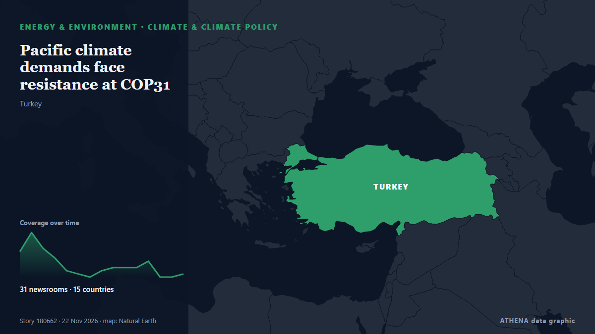

Pacific climate demands face resistance at COP31

COP31 negotiations have entered a critical second week after Australia’s Minister for Climate Change and Energy, Chris Bowen, presented the first draft of a presidency-led cover decision, setting out… από Post-Courier (PNG)
Τι άλλαξε 1 νέα αναφορά από 1 μέσο τις τελευταίες 24 ώρες.
Δείτε τις πηγές ›Τεκμήριωση: Περιορισμένη
Αναφέρθηκε ανεξάρτητα από 31 μέσα σε 15 χώρες από τις 8 Νοε, πρώτο το The Conversation (global)· η κάλυψη εξασθενεί. Το ATHENA εκτιμά τον κίνδυνο μέτριο (2.7/10), κυρίως λόγω της σοβαρότητάς του και της εμβέλειάς του. Βεβαιότητα 64% (μέτρια): το επιβεβαιώνουν 31 ανεξάρτητα μέσα, μέση αξιοπιστία 72%. Μέσα ανά χώρα: Αυστραλία (5), Ηνωμένο Βασίλειο (5), Ηνωμένες Πολιτείες (3). Κάλυψη: 8 Νοε έως 18 Νοε, 222 ώρες.
Γιατί έχει σημασία: Οι εξελίξεις στην ενέργεια και τους πόρους επηρεάζουν τις τιμές καυσίμων και ρεύματος, την ασφάλεια εφοδιασμού και τους κλιματικούς στόχους.
Τι άλλαξε: 1 νέα αναφορά στο 24ωρο έως 22 Νοε.
Πρώτη διατύπωση: Wars May Spur Faster Electrification
ΑυτοματοποιημένοΕπιλέχθηκε, ομαδοποιήθηκε και βαθμολογήθηκε με τη δημοσιευμένη μέθοδο της ATHENA από 28 ανεξάρτητα μέσα. Ο τίτλος είναι του μέσου· οι προτάσεις της ATHENA ακολουθούν σταθερά πρότυπα - δεν τις γράφει παραγωγική ΤΝ. Πώς λειτουργεί →
Πώς να διαβάσετε αυτή τη σελίδα
- Τι διαβάζετε
- 31 μέσα σε 15 χώρες ανέφεραν αυτό το γεγονός. Οι αναφορές παρακάτω εμφανίζονται με τη σειρά που δημοσιεύτηκαν· κάθε τίτλος ανοίγει το αρχικό άρθρο. Το ATHENA δεν γράφει δικά του ρεπορτάζ.
- Η εκτίμησή μας
- Για την καταγραφή — Οι αναφορές περιγράφουν ένα ολοκληρωμένο, εσωτερικό, εμπορικό ή προσωπικό ζήτημα. Το καταγράφουμε ώστε να βλέπετε ποιος το ανέφερε και πότε. Δεν παρακολουθούμε εδώ κίνδυνο ευρύτερης σύγκρουσης.
- Πόσα στοιχεία υπάρχουν
- Περιορισμένη Αντιμετωπίστε τη σελίδα ως πρώιμη αναφορά.
Αφού αφαιρεθούν οι επαναλήψεις, τα άσχετα και τα παλιά στοιχεία, υπολογίζονται 10 από τις 40 αναφορές που παρατίθενται· το 38% των τίτλων αντιστοιχεί στο γεγονός.
- Τι δεν σημαίνει
- Το ATHENA μετρά πώς καλύπτεται ένα γεγονός, όχι αν είναι αληθές. Δεν είναι πρόβλεψη, κρίση για το ποιος έχει δίκιο ή συμβουλή.
- Τι θα την άλλαζε
- Αναφορές από άλλα ανεξάρτητα μέσα που δείχνουν διαφορετική εξέλιξη, ή σαφής επιβεβαίωση ή διάψευση από επίσημη πηγή.
Εκτίμηση R2 · ανανεώνεται με κάθε ενημέρωση της σελίδας. Το ATHENA δεν έχει δημοσιεύσει ακόμη ιστορικό επιδόσεων για αυτές τις εκτιμήσεις· όταν το κάνει, θα συνδέεται εδώ.
Με μια ματιά
Επιλέγεται, βαθμολογείται και γράφεται από τη δημοσιευμένη μεθοδολογία του ATHENA. Κανένας συντάκτης δεν παρεμβαίνει σε μεμονωμένα γεγονότα. Πώς παράγεται ›
| 08 Nov 18:43 UTC | 8 |
|---|---|
| 09 Nov 18:43 UTC | 14 |
| 10 Nov 18:43 UTC | 9 |
| 11 Nov 18:43 UTC | 6 |
| 12 Nov 18:43 UTC | 2 |
| 13 Nov 18:43 UTC | 1 |
| 14 Nov 18:43 UTC | 0 |
| 15 Nov 18:43 UTC | 2 |
| 16 Nov 18:43 UTC | 3 |
| 17 Nov 18:43 UTC | 3 |
| 18 Nov 18:43 UTC | 3 |
| 19 Nov 18:43 UTC | 5 |
| 20 Nov 18:43 UTC | 0 |
| 21 Nov 18:43 UTC | 0 |
| 22 Nov 18:43 UTC | 1 |
| 10 Nov 14:46 UTC | 1.7 |
|---|---|
| 10 Nov 19:13 UTC | 3.2 |
| 10 Nov 22:35 UTC | 1.8 |
| 11 Nov 07:02 UTC | 1.6 |
| 16 Nov 02:06 UTC | 2.6 |
| 22 Nov 19:13 UTC | 2.7 |
Γιατί αυτοί οι αριθμοί
Σημασία
Πόσο πολύ και πόσο εμφανώς αναφέρεται η είδηση.
Κίνδυνος
Τι περιγράφουν οι αναφορές, βαθμολογημένο για πιθανή ζημιά. Δεν είναι πρόβλεψη.
Βεβαιότητα
Πόσο καλά την στηρίζουν οι ανεξάρτητες πηγές.
Εμφανίζεται 64% (υπολογισμός 90%): η αξιολόγηση τεκμηρίωσης είναι περιορισμένη, οπότε η βεβαιότητα κρατιέται στο μέτριο.
Η κάλυψη — ποιος το ανέφερε και πότε
ο τίτλος όπως δημοσιεύτηκε · ανοίγει το πρωτότυπο- The Conversation (global) · ΑυστραλίαYes, the COP climate talks are far from perfect. But they still hold the power for change
- RNZ Pacific · PACWorld Vision calls for child-centered climate financing ahead of COP 31
- New Zealand Herald · Νέα ΖηλανδίαCounties Manukau police slam ‘unacceptable’ behaviour during Rugby League World Cup gatherings
- The Age · ΑυστραλίαRugby league’s great-grandparents rule stretches eligibility to the limit
- Sydney Morning Herald · ΑυστραλίαIRL chair defends great-grandparents eligibility rule as Leniu lashes World Cup chiefs
- Sydney Morning Herald · ΑυστραλίαUN climate talks begin amid rapid warming and global fuel shock
- WalesOnline · Ηνωμένο ΒασίλειοNew World Rugby rankings announced as global game split into three tiers
- Yorkshire Post · Ηνωμένο ΒασίλειοFrom rugby league rejection to World Cup history: Nathan Collins targets another title
- Islands Business (Fiji) · PACPACNEWS TWO, 09 NOVEMBER 2026
- Islands Business (Fiji) · PACPACNEWS ONE, 09 NOVEMBER 2026
- Islands Business (Fiji) · PACPACNEWS THREE, 10 NOVEMBER 2026
- Türkiye Today · ΤουρκίαCOP31 delegates to get free museum access as Türkiye unveils ancient heritage exhibition
- DW English · ΓερμανίαWill Australia push for fossil fuel exit at UN talks?
- Bunkerspot ·Maritime Electrification Breakthrough Goal initiative launched at COP 31
- UN News · Ηνωμένες ΠολιτείεςCOP31: Energy transition takes centre stage as countries map path beyond fossil fuels
- Climate Home News · Ηνωμένο ΒασίλειοCOP31 Bulletin Day 2: Momentum builds on electrification and fossil fuel transition
- Punch · ΝιγηρίαCOP31: Delegates stranded as transport delays hit Türkiye
- The Hindu · ΙνδίαDomestic rooftop solar installations in T.N. remain low due to policy challenges, say consumers
- Anadolu Agency (English) · ΤουρκίαUK House of Lords member welcomes Türkiye-Australia leadership ahead of COP31
- Euractiv · ΒέλγιοTurkish electrification pledge gains little traction at COP31
- Insurance Journal · Ηνωμένες ΠολιτείεςGlobal Climate Talks Open With Big Questions, Smaller Goals
- Politico Europe · ΒέλγιοCountries on the fence over COP31’s flagship target
- PBS NewsHour · Ηνωμένες ΠολιτείεςAt UN climate talks, 5 nations back plan to double rooftop solar panels by 2030
- OilPrice.com · Ηνωμένο ΒασίλειοTurkey Wants COP31 to Focus on Electrification Instead of Fossil Fuel Cuts
- Post-Courier (PNG) · Παπούα Νέα ΓουινέαPacific urges the World to turn Climate commitments into Action
- The Straits Times · ΣιγκαπούρηWorld leaders to address COP31 as Turkey pushes for new climate deal
- Arab News · Σαουδική ΑραβίαWorld leaders to address COP31 as Turkiye pushes for new climate deal
- Cyprus Mail · ΚύπροςWorld leaders gather at COP31 as fossil fuel talks stall
- Punch · ΝιγηρίαCOP31 targets 35% global electrification by 2035
- Islands Business (Fiji) · PACPACNEWS ONE, 11 NOVEMBER 2026
- Islands Business (Fiji) · PACPACNEWS THREE, 11 NOVEMBER 2026
- Premium Times · ΝιγηρίαCOP31: HOMEF demands clarity over fossil fuel language in ongoing climate talks in Turkey
- SBS News · ΑυστραλίαFacing fossil fuel criticism, Albanese urges world not to overlook Pacific climate plight
- Islands Business (Fiji) · PACClimate science becomes a battleground at COP31 as Pacific warns against weakening 1.5°C ambition
- RNZ Pacific · PACCOP31: Climate action must continue even if 'US is not here', Pacific leaders say
- Post-Courier (PNG) · Παπούα Νέα ΓουινέαKeep 1.5 the north star, Pacific officials reminded as COP31 negotiations get underway
- The Irish News (Belfast) · Ηνωμένο ΒασίλειοNo 10 defends PM’s trip to Cop31 amid cost and net-zero questions
- Islands Business (Fiji) · PACPACNEWS ONE, 13 NOVEMBER 2026
- Islands Business (Fiji) · PACPacific urges world to turn climate commitments into action
- Post-Courier (PNG) · Παπούα Νέα ΓουινέαPacific climate demands face resistance at COP31